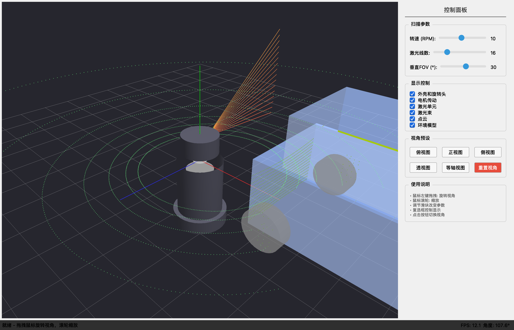
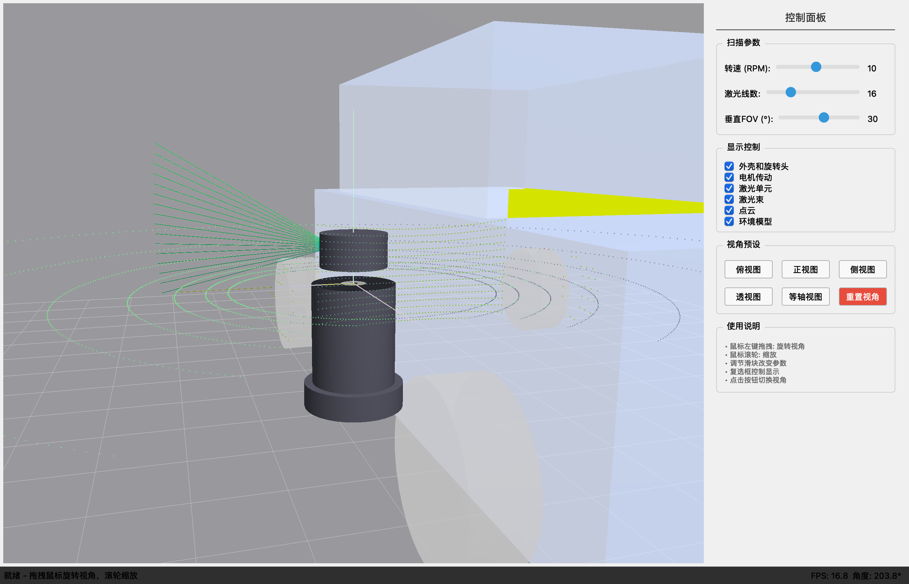
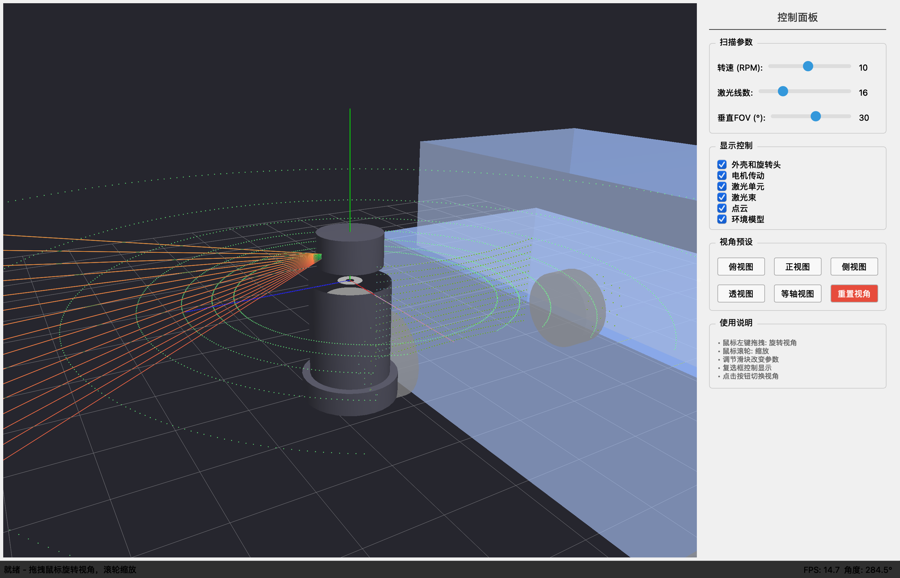
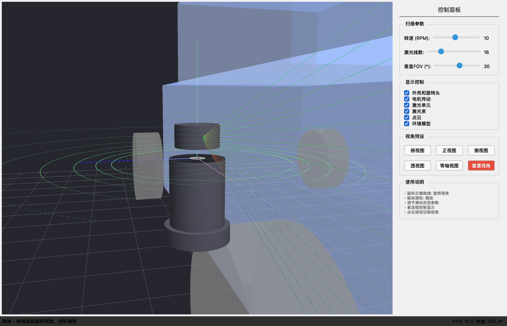
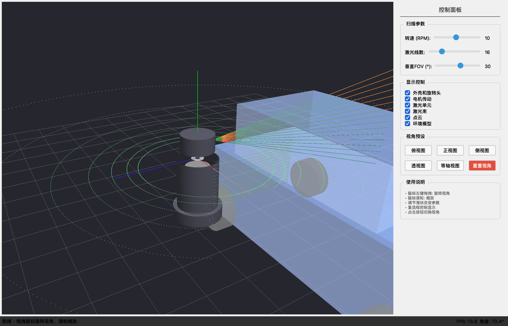
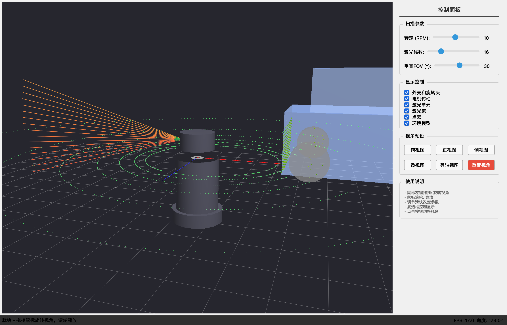
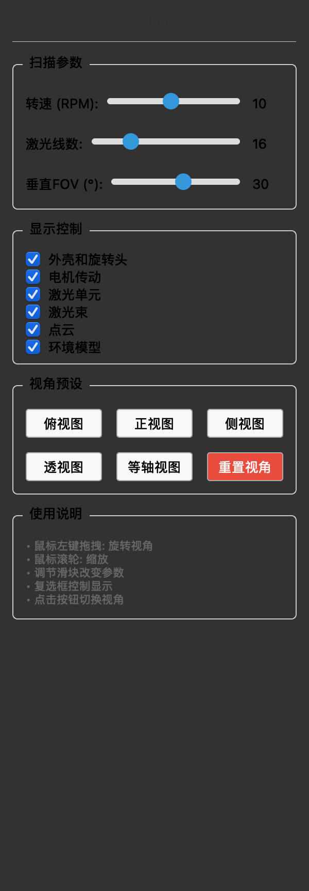

通过本系统的学习，学生将能够：
了解点云数据的生成过程
掌握 3D 图形编程基础
掌握相机控制和视角切换
学习射线碰撞检测算法
多物体碰撞检测优化
了解点云数据生成过程
| 知识领域 | 要求程度 | 说明 |
|---|---|---|
| Python 编程 | 基础 | 能够阅读和理解 Python 代码 |
| 线性代数 | 基础 | 向量、矩阵运算、坐标变换 |
| 计算机图形学 | 可选 | 了解 3D 渲染基本概念即可 |
| PyQt5 | 可选 | 本教材会涉及必要的 GUI 知识 |
LiDAR (Light Detection and Ranging) 是一种通过发射激光脉冲并测量反射时间来确定物体距离的遥感技术。
距离 = (光速 × 飞行时间) / 2
本演示系统模拟的是经典的机械旋转式 LiDAR，其结构如下：
┌─────────────────┐
│ 旋转头部 │ ← 水平360°旋转
│ ┌───────────┐ │
│ │ 激光单元 │ │ ← 垂直线束排列
│ │ 发射器/接收器│ │
│ └───────────┘ │
├─────────────────┤
│ 电机传动 │ ← 驱动旋转
├─────────────────┤
│ 底座外壳 │ ← 固定安装
└─────────────────┘
| 参数 | 说明 | 典型值 |
|---|---|---|
| 转速 (RPM) | 水平旋转速度 | 5-20 RPM |
| 线数 | 垂直方向激光器数量 | 16/32/64/128 |
| 垂直视场角 | 垂直扫描范围 | ±15° ~ ±30° |
| 水平分辨率 | 水平角度分辨率 | 0.1° ~ 0.4° |
| 探测距离 | 最大有效距离 | 100m ~ 200m |
每个点通常包含： - 三维坐标 (x, y, z) - 反射强度 (intensity) - 时间戳 (timestamp)
点云示例:
[
(x: 4.5, y: 0.2, z: -1.3, intensity: 0.8),
(x: 7.2, y: 1.5, z: 0.0, intensity: 0.3),
...
]
| 组件 | 技术选型 | 选型理由 |
|---|---|---|
| GUI 框架 | PyQt5 | 成熟的跨平台 GUI 库，与 OpenGL 集成良好 |
| 3D 渲染 | PyOpenGL | Python 的 OpenGL 绑定，高性能 3D 渲染 |
| 数学计算 | NumPy | 高效的向量和矩阵运算 |
| 动画计时 | QTimer | 流畅的动画帧控制（目标 60 FPS） |
┌─────────────────────────────────────────────────────────┐
│ MainWindow │
│ ┌───────────────────────────┐ ┌───────────────────┐ │
│ │ GLWidget │ │ ControlPanel │ │
│ │ ┌─────────────────────┐ │ │ - 扫描参数 │ │
│ │ │ Scene │ │ │ - 显示控制 │ │
│ │ │ ┌───────┐ ┌──────┐ │ │ │ - 视角预设 │ │
│ │ │ │Camera │ │Models│ │ │ └───────────────────┘ │
│ │ │ └───────┘ └──────┘ │ │ │
│ │ │ ┌────────────────┐ │ │ │
│ │ │ │ Environment │ │ │ │
│ │ │ └────────────────┘ │ │ │
│ │ └─────────────────────┘ │ │
│ └───────────────────────────┘ │
└─────────────────────────────────────────────────────────┘
| 模块 | 文件 | 职责 |
|---|---|---|
| UI 层 | ||
| MainWindow | ui/main_window.py | 主窗口布局、菜单栏、状态栏 |
| ControlPanel | ui/control_panel.py | 参数控制滑块、复选框、按钮 |
| 渲染层 | ||
| GLWidget | opengl/gl_widget.py | OpenGL 上下文、渲染循环、交互事件 |
| Camera | opengl/camera.py | 视角控制、投影变换 |
| Scene | opengl/scene.py | 场景管理、模型渲染、点云生成 |
| 模型层 | ||
| Environment | opengl/environment.py | 环境对象（车辆、墙壁）、碰撞检测 |
用户输入 渲染输出
│ ▲
▼ │
ControlPanel ──────► GLWidget ─┤
│ │ │
│ 参数变更 │ 更新 │ 渲染
▼ ▼ │
Scene ◄───────────── Camera │
│ │
│ 生成 │
▼ │
Point Cloud ──────────────────►│
│ │
│ 碰撞检测 │
▼ │
Environment ──────────────────►│
def initializeGL(self):
# 1. 设置背景颜色
glClearColor(0.15, 0.15, 0.18, 1.0)
# 2. 启用深度测试（正确处理遮挡关系）
glEnable(GL_DEPTH_TEST)
glDepthFunc(GL_LEQUAL)
# 3. 启用混合（支持半透明渲染）
glEnable(GL_BLEND)
glBlendFunc(GL_SRC_ALPHA, GL_ONE_MINUS_SRC_ALPHA)
# 4. 启用光照
glEnable(GL_LIGHTING)
glEnable(GL_LIGHT0)
glLightfv(GL_LIGHT0, GL_POSITION, [5.0, 10.0, 5.0, 1.0])
def paintGL(self):
# 1. 清除缓冲区
glClear(GL_COLOR_BUFFER_BIT | GL_DEPTH_BUFFER_BIT)
# 2. 重置模型视图矩阵
glLoadIdentity()
# 3. 应用相机变换
self.camera.apply_view()
# 4. 渲染场景
self.scene.render()
def _draw_lidar_body(self):
"""绘制 LiDAR 外壳"""
glColor4fv(self.colors['body'])
# 底座圆柱
glPushMatrix()
glTranslatef(0, -1.5, 0)
quadric = gluNewQuadric()
gluQuadricNormals(quadric, GLU_SMOOTH)
glRotatef(-90, 1, 0, 0)
gluCylinder(quadric, 0.6, 0.6, 0.3, 32, 1) # 底半径, 顶半径, 高度, 切片数, 堆叠数
gluDeleteQuadric(quadric)
glPopMatrix()
def update(self, dt):
"""更新场景状态"""
# RPM 转换为度/秒: RPM * 360 / 60 = RPM * 6
angle_per_second = self.rotation_speed * 6.0
self.rotation_angle += angle_per_second * dt
self.rotation_angle %= 360.0 # 保持在 0-360 范围内
Slab 方法将 3D 相交问题分解为三个 1D 区间相交问题：
def ray_intersect(self, ray):
"""
射线-长方体相交检测 (Slab 方法)
原理：将 AABB 看作三个无限 Slab（层）的交集
"""
min_bound, max_bound = self.get_bounds()
tmin = -float('inf')
tmax = float('inf')
for i in range(3): # 分别处理 X, Y, Z 三个轴
if abs(ray.direction[i]) < 1e-8:
# 射线平行于该轴，检查起点是否在 Slab 内
if ray.origin[i] < min_bound[i] or ray.origin[i] > max_bound[i]:
return False, float('inf')
else:
# 计算进入和离开该 Slab 的参数 t
t1 = (min_bound[i] - ray.origin[i]) / ray.direction[i]
t2 = (max_bound[i] - ray.origin[i]) / ray.direction[i]
if t1 > t2:
t1, t2 = t2, t1 # 确保 t1 <= t2
tmin = max(tmin, t1) # 最晚进入时间
tmax = min(tmax, t2) # 最早离开时间
if tmin > tmax:
return False, float('inf') # 区间无交集
t = tmin if tmin >= 0 else tmax # 取正的最近交点
return True, t
圆柱相交需要求解二次方程：
def ray_intersect(self, ray):
"""
射线-圆柱相交检测
数学原理：
圆柱方程 (Y轴为轴): x² + z² = r²
射线: P(t) = origin + t * direction
代入得到二次方程:
(dx² + dz²)t² + 2(ox·dx + oz·dz)t + (ox² + oz² - r²) = 0
"""
# 计算二次方程系数
a = dx * dx + dz * dz
b = 2 * (ox * dx + oz * dz)
c = ox * ox + oz * oz - self.radius * self.radius
discriminant = b * b - 4 * a * c
if discriminant < 0:
return False, float('inf') # 无实数解，不相交
sqrt_disc = math.sqrt(discriminant)
t1 = (-b - sqrt_disc) / (2 * a) # 进入点
t2 = (-b + sqrt_disc) / (2 * a) # 离开点
# 检查高度限制...
def generate_point_cloud(self):
"""根据 LiDAR 参数和环境碰撞生成点云数据"""
self.point_cloud_data = []
# LiDAR 发射器位置
lidar_origin = np.array([0.35, 0.4, 0])
# 水平扫描分辨率
horizontal_resolution = 1.0 # 每度一个点
# 遍历 360° 水平角度
for h_angle in np.arange(0, 360, horizontal_resolution):
h_rad = math.radians(h_angle)
# 遍历所有激光线
for i in range(self.laser_lines):
# 计算垂直角度（均匀分布在垂直 FOV 内）
v_angle = -self.vertical_fov/2 + self.vertical_fov * i / (self.laser_lines - 1)
v_rad = math.radians(v_angle)
# 计算射线方向
dx = math.cos(v_rad) * math.cos(h_rad)
dy = math.sin(v_rad)
dz = math.cos(v_rad) * math.sin(h_rad)
direction = np.array([dx, dy, dz])
# 发射射线，获取碰撞点
hit_point, distance, hit_object = self.environment.ray_cast(
lidar_origin, direction
)
if hit_point is not None:
self.point_cloud_data.append((
hit_point[0], hit_point[1], hit_point[2],
hit_object # 用于着色
))
def _draw_point_cloud(self):
"""绘制点云"""
glDisable(GL_LIGHTING)
glPointSize(3.0)
glBegin(GL_POINTS)
for point in self.point_cloud_data:
x, y, z, hit_type = point
# 根据碰撞对象类型着色
if hit_type == 'vehicle':
glColor4f(0.2, 0.5, 1.0, 0.9) # 蓝色
elif hit_type == 'wall':
glColor4f(1.0, 0.8, 0.2, 0.9) # 黄色
elif hit_type == 'ground':
glColor4f(0.2, 0.8, 0.3, 0.9) # 绿色
glVertex3f(x, y, z)
glEnd()
glEnable(GL_LIGHTING)
# main.py - 程序入口
def main():
app = QApplication(sys.argv)
app.setApplicationName("LiDAR Architecture Demo")
window = MainWindow()
window.show()
sys.exit(app.exec_())
# main_window.py - 主窗口设置
def _setup_ui(self):
# OpenGL 控件
self.gl_widget = GLWidget()
# 控制面板
self.control_panel = ControlPanel()
# 使用 Splitter 实现可调整布局
splitter = QSplitter(Qt.Horizontal)
splitter.addWidget(self.gl_widget)
splitter.addWidget(self.control_panel)
# environment.py - 完整的射线投射实现
class Environment:
def ray_cast(self, origin, direction, max_distance=20.0):
"""
发射射线，返回最近碰撞点
Args:
origin: 射线起点 (x, y, z)
direction: 射线方向 (dx, dy, dz)
max_distance: 最大检测距离
Returns:
hit_point: 碰撞点坐标
distance: 碰撞距离
hit_object: 碰撞对象类型
"""
ray = Ray(origin, direction)
min_t = float('inf')
hit_object = None
# 检测与车辆的碰撞
is_hit, t = self.vehicle.ray_intersect(ray)
if is_hit and t < min_t:
min_t = t
hit_object = 'vehicle'
# 检测与墙壁的碰撞
is_hit, t = self.wall.ray_intersect(ray)
if is_hit and t < min_t:
min_t = t
hit_object = 'wall'
# 检测与地面的碰撞
if ray.direction[1] < 0: # 射线向下
t_ground = -ray.origin[1] / ray.direction[1]
if t_ground >= 0 and t_ground < min_t:
min_t = t_ground
hit_object = 'ground'
if min_t < max_distance and hit_object:
hit_point = ray.origin + min_t * ray.direction
return hit_point, min_t, hit_object
return None, float('inf'), None
# scene.py - 点云渲染
def _draw_point_cloud(self):
"""绘制点云"""
glDisable(GL_LIGHTING) # 点云不受光照影响
glPointSize(3.0) # 设置点的大小
glBegin(GL_POINTS) # 开始绘制点
for point in self.point_cloud_data:
x, y, z = point[0], point[1], point[2]
hit_type = point[3] if len(point) > 3 else 'unknown'
# 根据碰撞对象类型着色
if hit_type == 'vehicle':
glColor4f(0.2, 0.5, 1.0, 0.9) # 蓝色
elif hit_type == 'wall':
glColor4f(1.0, 0.8, 0.2, 0.9) # 黄色
elif hit_type == 'ground':
glColor4f(0.2, 0.8, 0.3, 0.9) # 绿色
glVertex3f(x, y, z)
glEnd()
glEnable(GL_LIGHTING)
glPointSize(1.0)
# 创建虚拟环境（推荐）
python -m venv venv
source venv/bin/activate # Linux/Mac
# 或 venv\Scripts\activate # Windows
# 安装依赖
pip install -r requirements.txt
PyQt5>=5.15 # GUI 框架
PyOpenGL>=3.1.5 # OpenGL 绑定
numpy>=1.21 # 数学计算
# 进入项目目录
cd lidar_architecture
# 运行程序
python main.py

图：系统主界面，左侧为 3D 渲染区域，右侧为控制面板

图：LiDAR 侧视图，可看到旋转头、激光发射单元和底座结构

图：点云透视图，蓝色点为车辆、黄色点为墙壁、绿色点为地面
| 俯视图 | 等轴视图 |
|---|---|
 |
 |
| 正视图 | 侧视图 |
|---|---|
 |

图：控制面板，包含扫描参数、显示控制和视角预设
| 转速 (RPM) | 水平点数/圈 | 观察结果 |
|---|---|---|
| 5 | 720 | 点云密集，旋转慢 |
| 10 | 360 | 默认设置，平衡 |
| 20 | 180 | 点云稀疏，旋转快 |
思考：为什么转速越高，点云越稀疏？
| 线数 | 垂直间隔 | 适用场景 |
|---|---|---|
| 4 | 10° | 远距离探测 |
| 16 | 2° | 通用场景 |
| 32 | 1° | 高精度需求 |
| 64 | 0.5° | 近距离精细扫描 |
调节垂直 FOV 滑块，观察： - FOV 较小时：只能扫描水平附近区域 - FOV 较大时：可以扫描地面和高处物体
为什么垂直方向的线束分布可以是非均匀的？
算法设计
如何优化多物体的碰撞检测性能？
应用拓展
如何实现多帧点云的配准？
编程实践
| 概念 | 说明 | 代码位置 |
|---|---|---|
| VAO/VBO | 顶点数组对象/缓冲对象 | 本项目使用立即模式（glBegin/glEnd） |
| 深度测试 | 处理物体遮挡关系 | glEnable(GL_DEPTH_TEST) |
| 混合 | 实现半透明效果 | glEnable(GL_BLEND) |
| 光照 | 模拟真实光照效果 | glEnable(GL_LIGHTING) |
| 投影变换 | 3D 到 2D 的映射 | gluPerspective() |
| 视图变换 | 相机位置和方向 | gluLookAt() |
| 算法 | 适用对象 | 复杂度 | 参考文献 |
|---|---|---|---|
| Slab 方法 | AABB（长方体） | O(1) | [1] |
| 二次方程法 | 圆柱体 | O(1) | [2] |
| 射线-平面 | 无限平面 | O(1) | [3] |
| 参数 | 英文 | 计算方法 |
|---|---|---|
| 水平分辨率 | Horizontal Resolution | 360° / (转速 × 积分时间) |
| 垂直分辨率 | Vertical Resolution | 垂直FOV / (线数 - 1) |
| 点云密度 | Point Density | 水平点数 × 线数 / 秒 |
| 探测距离 | Detection Range | 取决于激光功率和目标反射率 |
LearnOpenGL: https://learnopengl.com/
LiDAR 技术
《Autonomous Driving: Technical Challenges and Solutions》
碰撞检测
| 快捷键 | 功能 |
|---|---|
R |
重置视角 |
1 |
俯视图 |
2 |
正视图 |
3 |
侧视图 |
4 |
透视图 |
5 |
等轴视图 |
ESC |
退出程序 |
| 鼠标左键拖拽 | 旋转视角 |
| 鼠标滚轮 | 缩放 |
本教材配套项目：机械旋转式激光雷达教学演示系统
最后更新：2026年2月